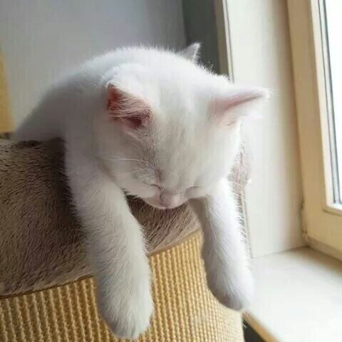
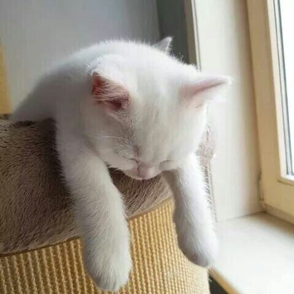

Galerie de poze
Ce pisici ti-ar placea sa vezi ?
Daca iti plac pisicile esti in locul potrivit.
Pisicile, în calitate de animale de companie preferate de milioane de oameni din întreaga lume, sunt fascinante dintr-o varietate de perspective. Cu o istorie veche de mii de ani, aceste creaturi grațioase au devenit subiect de interes și admirație pentru oameni de toate vârstele și culturile.
În primul rând, pisicile sunt cunoscute pentru agilitatea și flexibilitatea lor extraordinară. Ele pot sări la înălțimi impresionante și să se strecoare prin cele mai strâmte deschideri, datorită coloanei vertebrale extrem de flexibile și a musculaturii puternice. Aceste trăsături sunt rezultatul evoluției lor ca prădători eficienți și adaptabili.
O altă caracteristică fascinantă este abilitatea lor de a comunica. Pisicile folosesc o varietate de sunete, de la mieunat si tors până la fosnitul cozii sau murmuratul, pentru a-și exprima stările, dorințele și nevoile. De asemenea, comunică prin limbajul corpului, folosind poziția urechilor, pupilele dilatate sau mișcările cozii pentru a transmite informații.
Pisicile sunt cunoscute și pentru ritualurile lor de igienă meticulosă. Ele își petrec mult timp linsându-și blana, fiind extrem de atente la curățenia și aspectul lor. Acest comportament nu numai că le menține blana sănătoasă, ci și le ajută să se simtă mai confortabil și mai încrezătoare.
Misterul și independența pisicilor le conferă un farmec aparte. Ele sunt adesea descrise ca fiind „animale de companie de interior”, dar au și o natură aventuroasă și curioasă care le face să exploreze mediul înconjurător.
În concluzie, pisicile sunt creaturi complexe și fascinante, care ne aduc bucurie și companie în viața de zi cu zi. Cu comportamentul lor variat și personalitățile distincte, pisicile continuă să captiveze și să inspire oamenii din întreaga lume.
Ce pisici ti-ar placea sa vezi ?
 

Daca iti place aceasta pagina, poti contribui adaugand poze cu pisica ta în colectia noastra! Contacteaza-ne pe email!